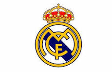

Bienvenidos a la Casa Blanca
El Real Madrid Club de Fútbol es un pilar fundamental del deporte internacional. Fundado oficialmente en 1902, el club ha construido una reputación basada en el esfuerzo, la deportividad y la victoria. Distinguido por la FIFA como el Mejor Club del Siglo XX, su legado trasciende fronteras.